Interface utilisateur¶
Cette page présente l'interface SpaceBench écran par écran.
Connexion¶
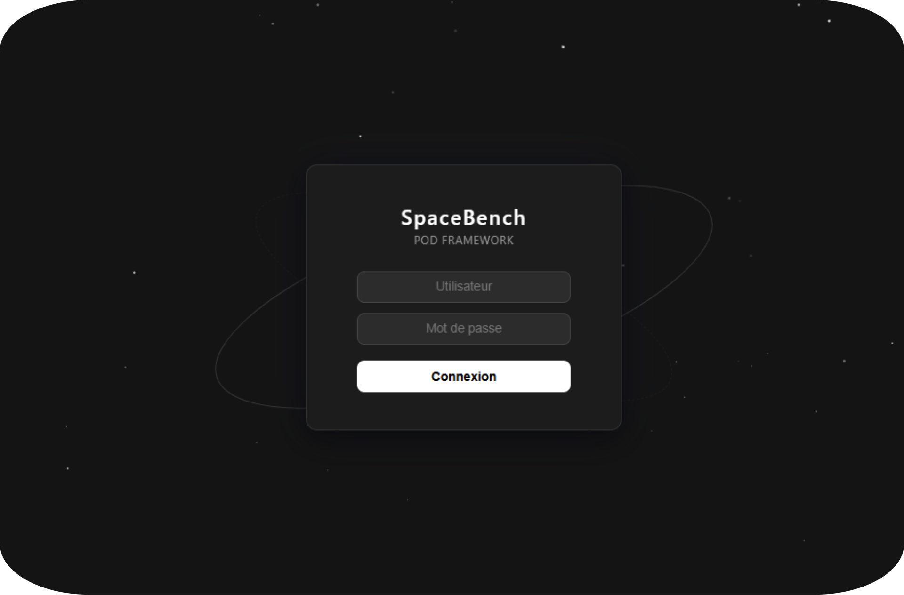
Les identifiants par défaut peuvent être trouvés → ici ←
Tableau de bord¶
Le tableau de bord est la vue principale après connexion. Il regroupe l'entièreté des données de traitement POD. On y retrouve un tableau filtrable et paginé, ainsi qu'un histogramme pour la visualisation graphique.
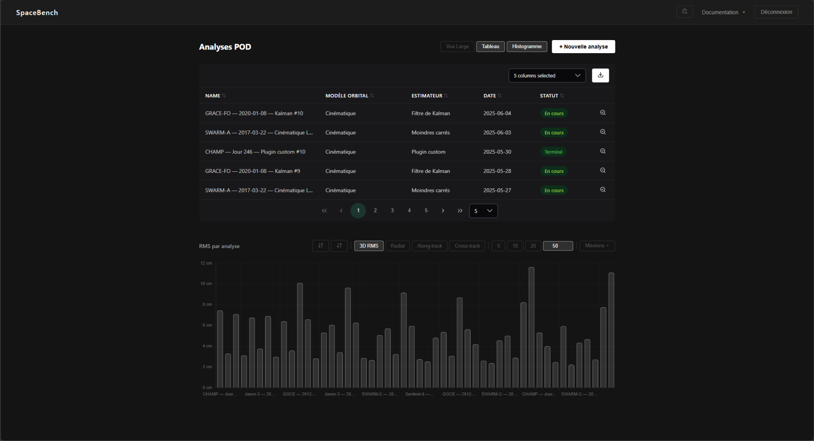
Il est possible d'afficher uniquement un des deux composants, ou même d'élargir la vue via les boutons "Vue Large", "Tableau" et "Histogramme".
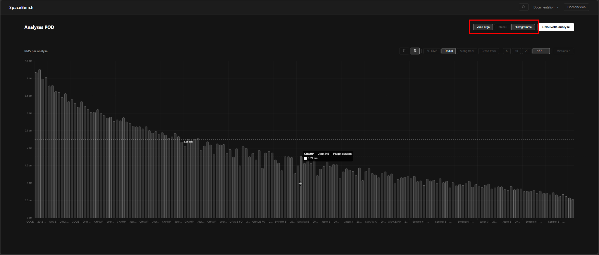
Tableau¶
Il affiche toutes les analyses POD dans un tableau paginé. Il est possible d'afficher/cacher des colonnes, de télécharger les données au format CSV, trier les colonnes de manière ascendante ou descendante, ainsi que voir les logs de la mission concernée.
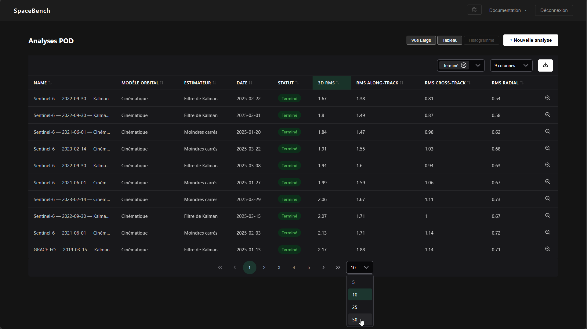
Cliquer sur l'icône de log d'une ligne ouvre le visualiseur de logs pour cette analyse.
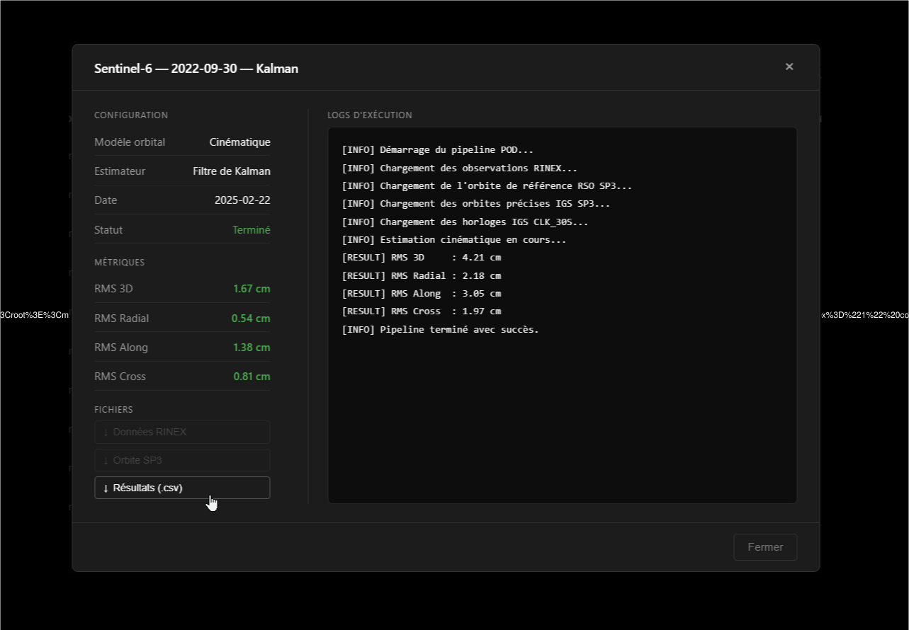
Histogramme¶
L'histogramme en bas de la page représente les résultats RMS sur toutes les analyses. Il est possible d'afficher les résultats en 3D RMS, Radial, Along-track, Cross-Track. Il est aussi possible de choisir les missions affichées, ou bien d'en choisir le nombre, ainsi que leur ordre.
Cliquez sur une barre de l'histogramme pour afficher une ligne horizontale qui servira de référence.
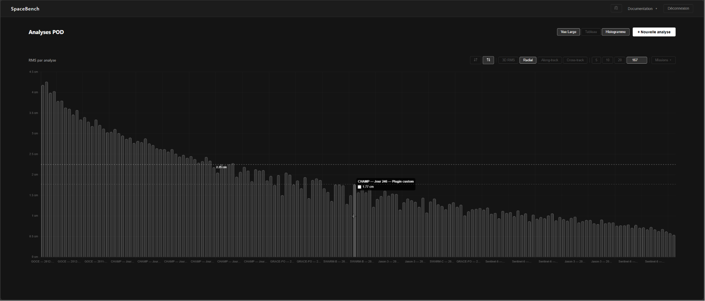
Nouvelle analyse — assistant en 4 étapes¶
Étape 1 — Upload des fichiers¶
Uploadez les 4 fichiers d'entrée requis :
| Fichier | Format | Source |
|---|---|---|
| Observations RINEX | .rnx |
Mission (GFZ / ISDC) |
| Orbites précises IGS SP3 | .sp3 |
IGS / CDDIS |
| Corrections d'horloges IGS CLK_30S | .clk_30s |
IGS / CDDIS |
| Orbite de référence RSO SP3 | .sp3 |
Mission (GFZ / ISDC) |
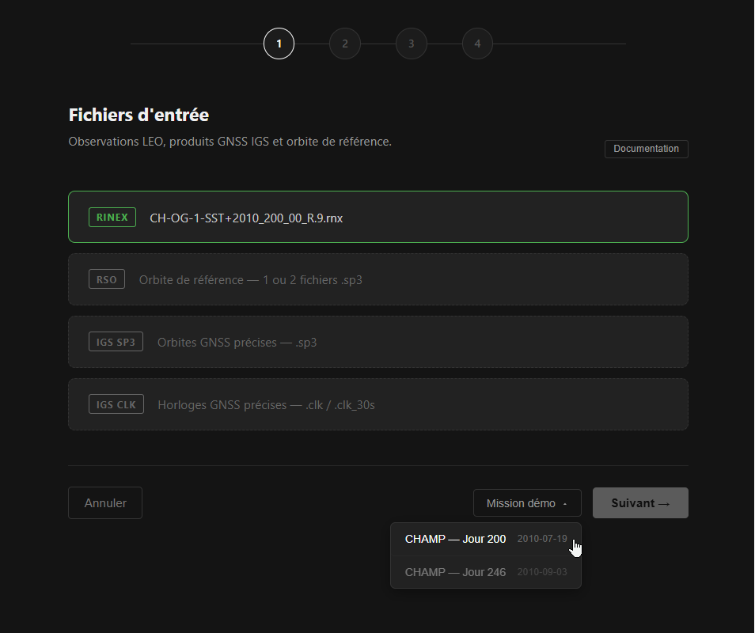
Note
Des données de démonstration (ex. CHAMP Jour 200 et 246) peuvent être chargées automatiquement via le bouton Mission démo.
Étape 2 — Modèle orbital¶
Seul le modèle Cinématique est disponible. Dynamique et Réduit-Dynamique ne sont pas implémentés.
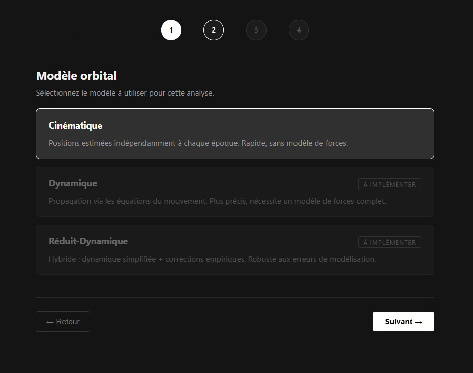
Étape 3 — Estimateur¶
- Moindres Carrés — ajustement batch sur l'arc
- Filtre de Kalman — estimation séquentielle
- Plugin personnalisé — uploadez un fichier
.pyimplémentant l'interfaceBaseEstimator
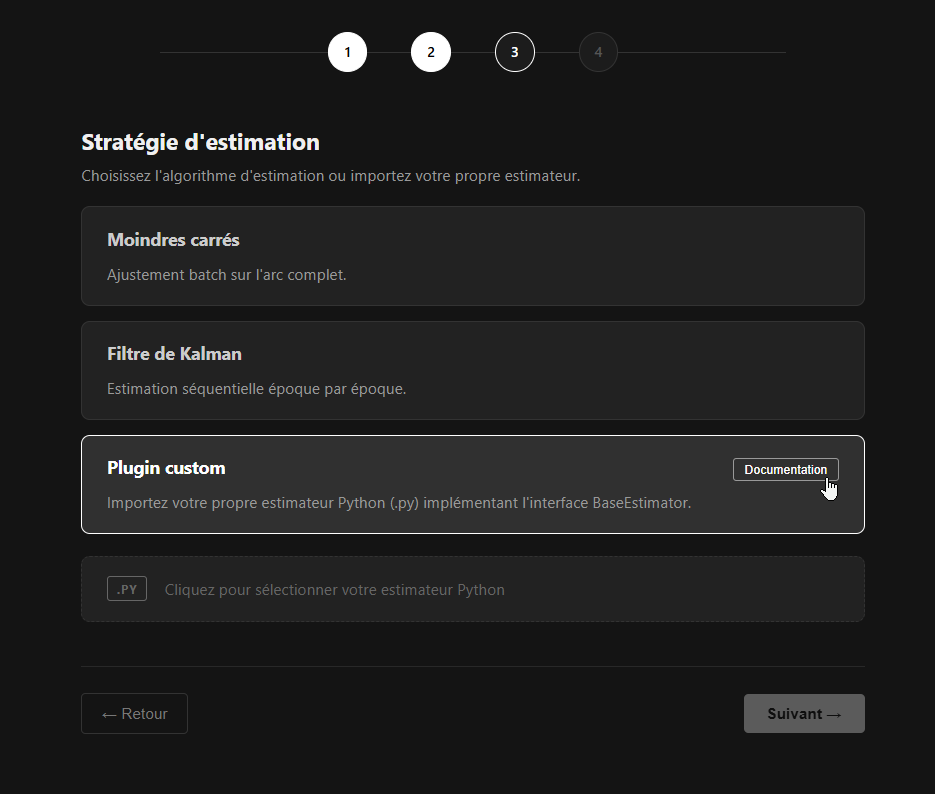
Étape 4 — Nom et lancement¶
Vérifiez les informations de l'analyse qui va être lancée.
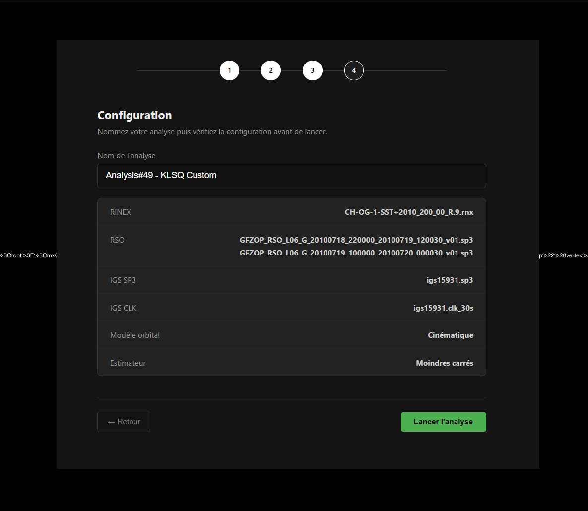
Si tout vous semble en ordre, donnez un nom à l'analyse et confirmez. Le pipeline démarre immédiatement en arrière-plan.
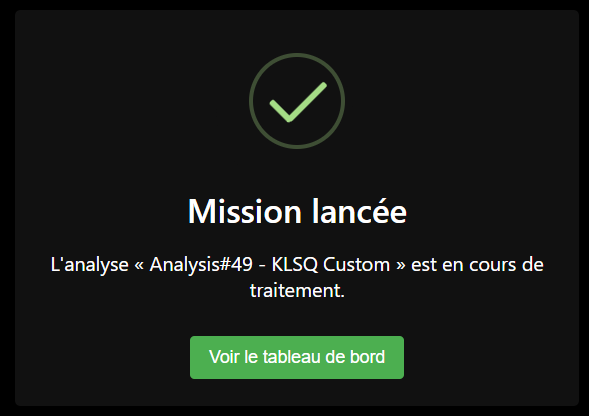
Barre de navigation¶
Il est possible via la barre de navigation d'accéder à la documentation (MkDocs, Swagger, ReDOC), de lancer les tests unitaires ou de se déconnecter.
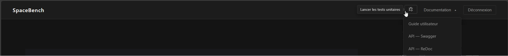
Tests unitaires¶
Lance les tests unitaires de la plateforme et affiche les résultats.
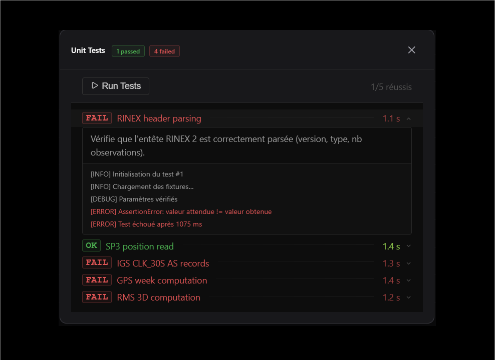
Non implémenté
Cette fonctionnalité est prévue mais pas encore implémentée.